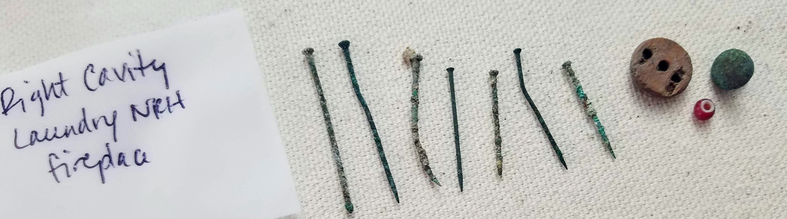

Museum Portfolio
From the most precious artifacts to the greatest historic sites, I strive to build experiences that allow all learners, no matter how far away, access to these tangible testaments of history and culture.
With over 3 years of experience in the collaborative development of traditional and digital experiences and content for museums and archives, I am excited to continue this work by partnering with you in the endeavour to share your precious cultural information with our world.